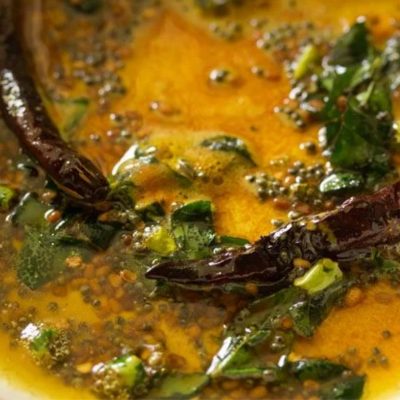
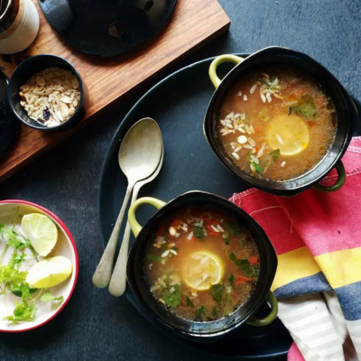

CONNECT WITH HEALTHY LIFE
CONNECT WITH HEALTHY LIFE
தேவையான பொருட்கள்:
செய்முறை:
1. பீஜே குதிரைவாலி அரிசியை ஊற வைக்க தேவையில்லை .
2. கழுவி பிரஷர் குக்கரில் (சிட்டிகை உப்புடன்) 3 விசில்.
3. கார குழம்பு அல்லது சாம்பாருடன் சூடாக பரிமாறவும்.

தேவையான பொருட்கள்:
செய்முறை:
1. பீஜே குதிரைவாலி அரிசியை கழுவி 10 நிமிடம் ஊற வைக்கவும். .
2.பிரஷர் குக்கரில், மிதமான தீயில் எண்ணெயை சூடாக்கவும்.
3. தாளிக்க கொடுத்துள்ள பொருட்களை வதக்கவும்.
4. பச்சை மிளகாய், வெங்காயம், இஞ்சி பூண்டு விழுது சேர்த்து பச்சை வாசனை போகும் வரை வதக்கவும்.
5. தக்காளி, நறுக்கிய காய்கறிகள் மற்றும் தேவையான உப்பு சேர்க்கவும்.
6. ஊறவைத்த அரிசியைச் சேர்த்து, அதில் 2 கப் தண்ணீர் ஊற்றவும்.
7. 2 விசில் வரும் வரை பிரஷர் செய்யவும்.
8. அழுத்தம் குறையும் வரை காத்திருங்கள்.
9. இந்த கிச்சடியில் நெய் சேர்த்து நன்கு கலக்கவும்.
10.சூடாக பரிமாறவும்.

தேவையான பொருட்கள்:
செய்முறை:
1. பீஜே குதிரைவாலி அரிசியை 15 நிமிடம் கழுவி ஊற வைக்கவும். பின்னர் தண்ணீரை வடிகட்டவும்.
2. பிரஷர் குக்கரை சூடாக்கி, 3 கப் தண்ணீர் மற்றும் ஊறவைத்த குதிரைவாலி அரிசியை சேர்த்து 3 விசில் விட்டு வேக வைக்கவும். பின்னர் அதை குளிர்விக்க விடவும்.
அல்லது கடாயை சூடாக்கி 8 கப் தண்ணீர் சேர்த்து கொதிக்க வைக்கவும், பின்னர் குதிரைவாலி அரிசியை சேர்த்து மென்மையாகும் வரை சமைக்கவும். பிறகு தண்ணீரை
வடிகட்டவும் [அதிகப்படியான நீர் இருந்தால்]. குளிர்விக்க தட்டில் பரப்பவும்.
3. கடாயில் எண்ணெயை சூடாக்கி கடுகு, மஞ்சள் தூள், மிளகுத்தூள், உளுத்தம் பருப்பு, உளுத்தம் பருப்பு மற்றும் வேர்க்கடலை சேர்க்கவும். பிறகு இஞ்சி,
பச்சை மிளகாய் & கறிவேப்பிலை சேர்க்கவும்.
4. வேகவைத்த குதிரைவாலி அரிசி மற்றும் உப்பு சேர்த்து நன்கு கலக்கவும். எலுமிச்சை சாறு சேர்த்து நன்கு கலக்கவும்.

5. அதன் மேல் இஞ்சி எண்ணெய் சேர்த்து நன்கு கலக்கவும். வெப்பத்தை குறைத்து ஊறுகாய், தேங்காய் சட்னியுடன் சூடாக பரிமாறவும்.
தேவையான பொருட்கள்:
செய்முறை:
1. பீஜே குதிரைவாலி அரிசியை 20 நிமிடம் தண்ணீரில் ஊறவைத்து, வெங்காயத்தை தோல் நீக்கி, பச்சை மிளகாயை சிறு துண்டுகளாக நறுக்கவும்.
கடாயை எண்ணெய் விட்டு சூடாக்கி, கடுகு போட்டு வெடிக்க விடவும்
2. வெங்காயம், மிளகாய், இஞ்சி, கறிவேப்பிலை, கடலை பருப்பு,காய்கறிகள்ஆகியவற்றை ஒவ்வொன்றாக சேர்த்து வெங்காயம் ஒளிரும் வரை வதக்கவும். பின்னர் தண்ணீர் மற்றும் உப்பு சேர்க்கவும்.
 3. தண்ணீர் கொதிக்க விடவும், தினையிலிருந்து தண்ணீரை வடிகட்டி, கொதிக்கும் நீரில் சேர்க்கவும்.
சுடரை நடுத்தரமாக வைத்து கடாயை மூடி, தண்ணீர் முழுவதும் உறிஞ்சும் வரை சமைக்கவும். இறுதியாக துருவிய தேங்காய் சேர்த்து நன்றாக கலக்கவும்.
3. தண்ணீர் கொதிக்க விடவும், தினையிலிருந்து தண்ணீரை வடிகட்டி, கொதிக்கும் நீரில் சேர்க்கவும்.
சுடரை நடுத்தரமாக வைத்து கடாயை மூடி, தண்ணீர் முழுவதும் உறிஞ்சும் வரை சமைக்கவும். இறுதியாக துருவிய தேங்காய் சேர்த்து நன்றாக கலக்கவும்.
4. சட்னி அல்லது சாம்பாருடன் பரிமாறலாம்.

தேவையான பொருட்கள்:
செய்முறை:
1. ½ கப் பீஜே குதிரைவாலி அரிசியை குதிரைவாலி (தண்ணீரில் 3-4 மணி நேரம் ஊறவைக்கவும்)
2. அடி கனமான பாத்திரத்தில் எண்ணெய் ஊற்றி, நறுக்கிய வெங்காயத்தை வதக்கவும்.
3. இஞ்சி-பூண்டு விழுது சேர்த்து பச்சை வாசனை போகும் வரை வதக்கவும்.
4. இப்போது புதினா இலைகள் மற்றும் கொத்தமல்லி இலைகளை சேர்க்கவும்.
5. உப்பு மற்றும் கரம் மசாலா சேர்க்கவும். தண்ணீர் கொதிக்க ஆரம்பித்ததும், ஊறவைத்த குதிரைவாலி சேர்க்கவும். நன்கு கிளறி, குறைந்த தீயில் 10 நிமிடங்கள் சமைக்கவும்.
6. கிளறி, தீயை அணைக்கவும். குதிரைவாலி கஞ்சியை சூடாக பரிமாறவும்.
